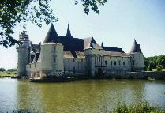
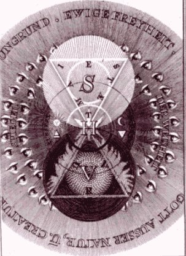
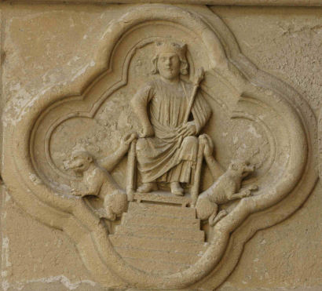

Emblema II.
revu le 27 juillet 2003
Nutrix ejus terra est.
(La terre est sa nourrice.)
On dit que Romulus téta une âpre louve,
Jupiter, une chèvre, et que c’est assuré.
Faut-il donc s’étonner si, selon nous, la Terre
A nourri de son lait le tendre fils des Sages ?
Quand d’un faible animal le lait fit ces héros,
Comme il sera donc grand, celui dont la nourrice
Est le globe terrestre !1
FUGA II
Les péripatéticiens et les philosophes au jugement droit affirment que la nourriture est changée en la substance du sujet nourri et qu’elle lui est assimilée après et non avant son altération. Cet axiome est regardé comme très véridique. Comment en effet la nourriture qui est déjà, auparavant, semblable et identique au sujet nourri, aurait-elle besoin d’un changement de sa substance ? Si un tel changement se produisait, la nourriture ne demeurerait pas semblable et identique. Et comment les aliments qui ne peuvent être assimilés par le sujet nourri, par exemple le bois, les pierres et autres choses semblables, seraient-ils pris comme nourriture ? Par conséquent la première de ces opérations est sans objet et la seconde contraire à la nature.2
Mais qu’un homme qui vient de naître soit nourri du lait des animaux, cela ne répugne pas à la nature : l’assimilation de ce lait peut s’opérer, celle du lait maternel bien plus aisément, toutefois, que celle d’un lait étranger. C’est pourquoi les médecins concluent que l’enfant sera en bonne santé, semblable à sa mère par la substance et par les mœurs et qu’il recevra la vigueur, s’il est toujours réchauffé et élevé grâce au lait de sa propre mère. Leur conclusion est inverse s’il s’agit d’un lait étranger.3 Telle est l’harmonie de toute nature : le semblable trouve sa joie en son semblable et imite ses pas en toutes choses, autant qu’il le peut, selon une sorte de consentement, de conspiration tacites. Il en va habituellement, dans l'œuvre naturelle des Philosophes, dont la forme est justement réglée par la nature, comme pour l’enfant à l’intérieur du sein maternel.4 Et, bien que son père, sa mère et sa nourrice elle-même lui soient assignés par voie de similitude, cette œuvre, cependant, n’est pas plus artificielle que la génération de n’importe quel animal. Deux semences sont unies, suivant un certain procédé plein d’attrait, par les animaux et par les deux sexes humains. Leur union produit, par une altération successive, l’Embryon qui croît et se développe, acquiert vie et mouvement, puis est nourri de lait. Pendant la période de la conception et de la grossesse, il est nécessaire que la mère agisse avec mesure en ce qui concerne la chaleur, l’alimentation, le repos, le mouvement et le reste.5 Sinon, il s’ensuit l’avortement et la destruction du fœtus ; ce précepte, dans
" les six choses non naturelles "
est également artificiel, car il est prescrit par les médecins suivant leur art. De même, si les semences n’ont été unies dans l’œuvre philosophique, il faut qu’elles le soient. Et si on les trouvait, en quelque endroit, unies de la même manière que, dans l’œuf, les semences du coq et de la poule sont regardées comme une seule substance ensemble dans un seul contenant, l’œuvre des philosophes serait alors encore plus naturelle que la génération des animaux. Et disons, comme les philosophes l’attestent, que l’un vient de l’Orient et l’autre de l’Occident6 et qu’ils deviennent une seule chose ; que leur fournit-on de plus que le mélange dans leur vase, la chaleur, la juste proportion, et la nourriture ? Le vase, il est vrai, est artificiel, mais il n’existe pas de différence selon que le nid est l’œuvre de la poule ou qu’il est édifié par la fermière en un certain endroit mal déterminé (comme c’est l’usage) : la génération des œufs se produira de la même manière, ainsi que l’éclosion des poussins.
La chaleur est une chose naturelle, qu’elle provienne soit du feu modéré des fourneaux ou du fumier de la putréfaction, soit du soleil et de l’air, des entrailles de la mère ou d’ailleurs. Ainsi, l’Egypte applique avec art, au moyen de ses fourneaux, la chaleur naturelle pour faire éclore les œufs. On recueille des semences de bombyx et même des œufs de poule que l’on a fait éclore grâce à la tiédeur des seins d’une vierge. Ainsi l’art et la nature se prêtent mutuellement la main de manière que chacun soit le substitut de l’autre. Néanmoins la Nature demeure la Maîtresse et l’art le serviteur.
Mais pourquoi la Terre est-elle déclarée nourrice du Fils des Philosophes ? Un doute sur ce point pourrait naître du fait que la terre est, parmi les éléments, aride et sans aucun suc, elle qui possède la sécheresse comme qualité propre. Il faut répondre qu’on l’entend ici, non de l’élément mais de la terre élémentée dont nous nous sommes abondamment souvenu et avons expliqué la nature au premier jour de la Semaine philosophique. Elle est la nourrice du Ciel,7 nourrice qui ne dissout, ne lave ni n’humecte le fœtus, mais le coagule, le fixe, le colore, le change en suc et en sang pur. Car la nutrition comprend l’augmentation en longueur, largeur et profondeur, c’est-à-dire celle qui s’étend suivant toutes les dimensions du corps. Comme elle existe ici, fournie au fœtus philosophique par la seule terre, celle-ci devra, à bon droit, être appelée du nom de nourrice.8 Mais cet admirable suc de la terre produit un effet contraire à celui des autres espèces de lait qui sont changés et ne changent pas. Car, grâce à sa vertu très puissante, il modifie grandement la nature du sujet nourri, de même que, selon l’opinion admise, le lait de la louve a disposé le corps de Romulus en vue d’une nature hardie et prompte à la guerre.
Notes1. La Terre a fait l'objet de tant d'allégories alchimiques qu'on s'épuiserait inutilement à vouloir toutes les analyser. Le lecteur n'aura qu'à se donner la peine de chercher sur ce site. Gageons qu'il trouvera ce qu'il cherche. Que dire de plus sur le sujet ? Que la Terre est représentée par un carré ; qu'on la considère comme un élément passif, féminin et à caractère mercuriel prononcé ; qu'on l'associe fréquemment dans le symbolisme, rattachée à la Vierge [cf. Atalanta, XLVII]. Dans la section sur Fontenay, nous avons donné trois types de Terre qui peuvent convenir à l'oeuvre. Dans la section des blasons hermétiques, nous avons passé en revue les terres que le « labourant » aura intérêt à cultiver. Enfin, on ne saurait passer sous silence le symbole qui, pour beaucoup d'apprentis, a fait l'objet, et reste le sujet de leurs préoccupations : la stibine ou trisulfure d'antimoine. Ce minéral métallique a fait l'objet, selon l'expression des chimistes qui se sont penchés sur l'histoire de notre Art, de tous les tourments. Il a véritablement subi la passion, tant il a été accomodé à des sauces diverses par des générations de souffleurs. On l'a calcinée, séparée, mise en étoile [le régule d'antimoine], distillée, vaporisée, crucifiée à l'eau forte, à l'esprit de sel, à l'esprit de nitre. Bref, comme on aurait dit Nicolas Flamel, on en a fait mille brouilleries...Isaac Newton lui a même donné la caution de son autorité. Newton pensait que le signe du Bélier cachait l'hiéroglyphe de la stibine, parce que le soleil trouve son exaltation dans ce signe et que l'or est exalté [purifié] par l'antimoine. Nos Philosophes modernes se sont aussi bien amusés à induire en confusion les pauvres étudiants. E. Canseliet a soumis la stibine à la torture cabalistique, ce qui a donné des résultats fort curieux. Le moindre n'est pas celui que nous allons rapporter : dans ses Deux Logis alchimiques, au chapitre parlant du château du Plessis-Bourré, voici ce qu'il nous dit :

FIGURE I
(château du Plessis-Bourré)"C'est maintenant qu'il faudrait qu'on revît, dans notre Livre muet de l'Alchimie, l'alinéa qui concerne l'étoile, et dans lequel, afin de rectifier une erreur d'impression, on séparera ANTOINE de cette façon : ANT-OINE, et non de celle-ci : AN-TOINE..." [Deux Logis alchimiques]
Que le lecteur relise ici ce que nous avons dit de l'étymologie du mot antimoine, dans notre commentaire du Char Triomphal de Basile ; il verra que le mot anqoV désigne spécialement les fleurs, au sens d'efflorescences, ou de nitre. Certes, il ne s'agit pas du salpêtre vulgaire qui ne saurait constituer le feu secret, mais il s'agit d'une indication. Pour la chèvre Amalthée, voyez l'Atalanta XXV, XXXII, XXXVIII, XLIII, XLIV et la section Fontenay.
2. La genèse des formations minérales, des concrétions métalliques doit ici préoccuper l'étudiant. Comment expliquer la présence de chaux carbonatée cristallisée dans les terrains gypseux ou salifères ? Pourquoi des lames de chaux sulfatée, plongées pendant plusieurs mois, dans une solution de potasse, se transforment-elles en chaux ayant une structure cristalline ? Ne doit-on pas admettre que, d'une certaine façon - oh ! certes que réprouverait la logique cartésienne - la chaux s'est nourrie d'un principe contenu dans le sel de potasse, c'est-à-dire dans le sel de cendres ? Ne peut-on pas y deviner une action de l'Esprit universel [que le lecteur se rassure, il n'y a là aucun rapport avec un ésotérisme de mauvaix aloi, que nous réprouvons ; au contraire, c'est la lumière que nous appellons de nos voeux. Mais la pratique de notre Art réclame un langage particulier, au charme certainement désuet mais efficace et poétique...]
3. Ce passage est une allusion au Lait de vierge, qui permet l'accroîssement progressif de la Pierre. Ce Lait a fait l'objet de nombreuses allégories et chaque Philosophes y est allé de sa plume pour le décrire. Cette expression est employée pour désigner le Mercure utilisé par la voie humide, mais d'autres s'en servent pour désigner le Mercure de la voie sèche. Voici ce que nous en dit Pierre Dujols [Magophon] :"Le mercure des philosophes, animé et sublimé selon les règles, doit circuler longtemps dans le vase avant de produire les heureux effets qu’on attend de lui. Mais il y a plusieurs mercures dans l’œuvre, et Philalèthe en signale un second, tout particulièrement, sous le nom de lait de vierge. Celui-ci diffère du premier en quelque chose, bien qu’ils soient tous les deux de même essence. Philalèthe, Ripley et d’autres vont jusqu’à dire qu’il s’agit du mercure commun. Basile Valentin, au contraire, le bannit avec malédiction. Certains ont cru que le lait de vierge pouvait être obtenu par une combinaison des deux. Nous connaissons un artiste qui a réalisé ce tour de force pour le plaisir de vaincre la difficulté, sans prétendre en tirer d’autre conséquence." [Hypotypose]
Voyez les sections suivantes : Nouvelle Lumière chymique - humide radical - Livre secret d'Artéphius - En somme, le Lait de Vierge semble préparé à partir d'une humidité de la Pierre, comme le dit Pernety :
"C’est aussi le mercure qui est une eau sèche, qui ne mouille point les mains, et qui ne s’attache qu’à ce qui est de sa nature. Ceux qui prétendent qu’il y a deux voies, la sèche et l’humide pour faire le magistère, appellent humidité de la pierre l’eau permanente des Sages sous forme d’eau laiteuse, nommée lait de vierge, humidité visqueuse. Ceux qui n’admettent que la voie sèche, l’appellent eau sèche simplement. Mais c’est un leurre que ces deux voies; les uns et les autres suivent la même sous deux noms différens; ils n’ont égard, dans ces dénominations, qu’aux différentes formes sous lesquelles se montre leur mercure dans le cours des opérations." [Dictionnaire]
C'est en substance ce que nous dit Fulcanelli lorsqu'il précise que les Adeptes ont nommé leur matière tantôt Soufre, tantôt Mercure, selon l'état dans laquelle elle était disposée. Il faut certainement y voir une allusion semblable quand il ajoute que l'on voit l'étoile ou la fleur, selon que l'une masque l'autre. L'étoile est de nature mercurielle et la fleur de la nature du soufre.

FIGURE II
(extrait de Jacob Bôhme, Theosophische Wercken, 1682 : la fleur et l'étoile)4. On pourrait dire bien des choses sur les productions concrétionnées de la nature et leur reproduction en laboratoire. Si l'on fait fondre, par exemple, du sel harmoniac [il ne s'agit nullement de l'ammoniaque] et de la Magnésie, nous obtenons des cristaux qui n'ont pas été formés par voie de fusion ignée mais par voie humide. Nous ferons ici un rapprochement, que certains trouveront insolites, entre les météorites et l'Art d'Hermès. Pourtant, si l'on a lu nos Principes, on se rappellera de la pierre noire, tombée à Pessinonte et devenue depuis l'emblème de Cybèle [renvois récents : Fontenay - humide radical - prima materia - Principes - Mercure naturel - ]. Cette pierre noire n'était autre qu'une météorite. S'il était permis de chercher quelque analogie avec le sujet qui nous occupe, nous dirions que les cristaux obtenus par la fusion des météorites rappellent les longues aiguilles de glace que l'eau liquide forme en se congelant, tandis que la structure à grains fins des météorites naturelles du type commun ressemble plutôt à celle du givre ou de la neige, formée, comme chacun sait, par le passage immédiat de la vapeur d'eau atmosphérique à l'état solide [cf. Etudes synthétiques de Géologie expérimentale, G. Daubrée]. C'est d'après ces considérations qu'il nous faut chercher à produire, dans l'athanor philosophique, une sorte de givre [pacun] dont la substance fut, non pas de l'eau vulgaire, mais un Mixte où participe le sel d'Ammon et la Magnésie. En quelque sorte, il convient de coaguler l'eau mercurielle en la figeant en une sorte de gelée blanche, de frimas. Car l'enfant des Sages doit être rebondi, raison pour laquelle on l'a comparé à Bacchus. On peut ainsi arriver à reproduire un tel Mixte en présence de la vapeur d'eau et à la pression ordinaire, point fondamental dans tout ce qui a question à la voie humide.
5. Si l'on poursuit l'expérience précédente, on voit qu'en se plaçant au point de vue du rôle de la concrétion dans la formation des roches, on peut remarquer que les régions les plus externes du soleil présentent un mélange de vapeurs où se rencontrent tous les éléments nécessaires à la préparation de ce sel d'Ammon combiné à notre Magnésie. C'est effectivement à un excès de chaleur qui règne dans ces régions, que réside la seule cause qui provoque la dissociation de ces éléments qui demeurent séparés. Au XIXe siècle encore, certains savants, membres de l'Institut, tels que Stanislas Meunier, pensaient que les composés que nous avons en vue pouvaient entrer pour une forte proportion dans la constitution de la poussière solide à laquelle la photosphère doit son éclat. Le rapport avec le Mercure des Sages est immédiat, si l'on considère que la photosphère n'est visible que lors d'une éclipse totale de lune [cf. Atalanta, XLV]. Raymond Lulle l'avait deviné depuis fort longtemps.
6. Maier veut parler du minéral et du métal qui sont indispensables à la préparation de la Pierre. L'Orient pose moins de problème que l'Occident. L'Orient, c'est l'aurore, Vénus-Aphrodite et l'étoile Sirius. L'Orient renvoie à la partie minérale. L'Occident, le soir, c'est un croissant de lune, lune montante, qui peut être en conjonction avec Vénus, sur le point de se coucher. C'est le suc de la Lunaire qui voile ainsi l'un des sujets de l'oeuvre ; il s'agit de la Lune hermétique dont on a donné le nom vulgaire ailleurs [cf. mercure de nature]. On connait aussi des vents qui soufflent de l'est et de l'ouest. Ces vents chassent les Harpies qui ne cessent de tourmenter Phinée. On les voit représentés exactement à l'emblème XVII de la Philosopha reformata de Mylius. Il faut parler un peu de la rose des vents car c'est elle qui, dans l'oeuvre, détermine la bonne orientation du pilote de l'onde vive. Ce pilote, Mathurin Eyquem, sieur du Martineau, en a fait un traité, Le Pilote de l’onde vive ou Le secret du flux et reflux de la mer et du point fixe [Jean d'Houry, Paris, 1678]. Eyquem place l'orient au Bélier, c'est-à-dire au début traditionnel de l'oeuvre, et dans un signe qui appartient au triangle de Feu. Il écrit :"Ce point a douze principaux rayons, qui répondent aux douze Corps dont j’ai ci-devant parlé. Il les inspire, et leur donne le mouvement et l’action, comme il a inspiré les Cieux, les composez qui sont au dessous, et leur a donné aussi le mouvement et l’action : Et Dieu, comme la première Cause, a établi l’ordre du Mouvement, a ordonné à quelques-uns de ces Corps de se tourner à droit, et à d’autres à gauche : comme au premier mobile d’aller d’Orient en Occident, et aux Cieux inférieurs, d’Occident en Orient."
Eyquem attribue une vertu chaude au Bélier et une vertu humide à la Balance [signe d'Eau]. Les Poissons [Atalanta, XL] sont placés dans la partie orientale et leur orientation est Est-Sud-est ; le Scorpion [Atalanta, XLIX] a une orientation Ouest-Sud-ouest. De là à penser que l'on peut y voir Calaïs et Zéthès, il n'y a qu'un pas... Quoi qu'il en soit, on admet que l'Orient se rapporte à l'Âme et l'Occident au Corps. Cela est conforme avec la cabale hermétique : nous venons de voir que la Lune hermétique, celle qui apparaît au couchant, quand elle est nouvelle, est l'hiéroglyphe du suc de la Lunaire qui n'est autre que le Corps de la Pierre. L'Orient se rapporte indirectement à l'Âme. Expliquons-nous : la sublimation philosophique, sans laquelle rien n'est possible, exige que les soufres soit dissous dan un milieu particulier : ce milieu n'est autre que le Mercure commun. De là, cette singulière mixtion donne naissance au Mercure philosophique. L'Orient est donc doublement le symbole de la lumière : exotérique d'abord, parce que le soleil se lève à l'Est [c'est faux bien sûr, mais nous ne parlons ici que pour les amoureux de Science] et ésotérique, parce que le Corps doit être animé d'un rayon de lumière ; c'est ce qui arrive lorsque le Sagittaire [Atalanta, XLIX], signe de Feu, lance sa flèche vers l'étoile. L'Occident correspond à la Nuée, c'est-à-dire au chaos primordial, état chthnonien de la prima materia avant que le feu de l'Artiste ne l'équarisse : l'Occident donne ainsi l'aspect d'une matière indifférenciée. Les principes chinois du Ying et du Yang n'expriment pas autre chose. Cela va en droite ligne avec les voyages sûfi qui commencent à l'exil occidental, retour vers la materia prima [préparation de la Lune hermétique]. Mais nous ne suivrons pas plus loin les traités de symbolisme qui dérivent maladroitement à partir de là, en versant dans un ésotérisme qui, pour nous, est de bas aloi. Si nous considérons la signifiance des deux signes zodiacaux du Bélier [Orient de l'oeuvre, cf. Atalanta, L] et de la Balance [Occident de l'Oeuvre, cf. Atalanta, XLI], tout en a déjà été dit ailleurs. Au risque de nous répéter, nous affirmerons pourtant que :
- Arès, dans le Bélier, doit être distingué d'Ariès. Ariès, si l'on veut bien nous pardonner ce néologisme, est un « christophore », c'est-à-dire « ce qui porte l'or ». Ce n'est rien d'autre que la résine de l'or, ou Toyson d'or de Salomon Trismosin [cf. la légende de saint Christophe, Offerus, in Tarot Alchimique à l'arcane de l'ermite]. Arès n'est que la clef qui ouvre les métaux et en fait couler, sourdre, l'humide radical métallique.
- la Balance renvoie à la Justice et à Vénus qui, en astrologie, lui est liée par tradition.
Ce que nous venons d'écrire vaut aussi bien pour l'allégorie bien connue des hermétistes des deux chiens dont l'un vient d'Orient et l'autre, de l'Occident. Il s'agit plus précisément de la chienne d'Arménie [bol arménien, bleu arménien] et du chien du Khorassan. Ces deux chiens symbolisent les matières que l'Artiste devra apprêter afin qu'elles concourent à la naissance du basileuV. C'est ce Roi que l'on voit représenter sur un bas-relief du portail saint Firmin de la cathédrale d'Amiens :
FIGURE III
(les deux chiens et le Roi ; cathédrale d'Amiens - cliché Alain Mauranne)7. C'est par voie humide que l'on peut préciser de quelle manière l'élément terrestre nourrit le Ciel des philosophes, c'est-à-dire l'endroit où les éléments sublimés viennent se déposer et accroître la Pierre. Prenez par exemple de la Magnésie, disposée au milieu d'un tube de porcelaine disposé sur un fourneau ; connectez l'une des extrémités de ce tube avec une cornue où bout de l'eau ; placez à l'autre extrémité un tube abdcteur d'un petit ballon renfermant le sel d'Ammon, lequel ballon est chauffé au bain-marie. A peine le tube est-il au rouge qu'une poudre blanche apparaît. Examinez au microscope cette poudre : vous y verrez des cristaux disposés sous forme de rayonnements autour d'un point, absolument comme les agglomérations d'aiguilles de silicate de magnésie répandues dans les météorites les plus ordinaires. Cette simple expérience de spagyrie naturelle offre déjà des éléments où se retrouve le symbolisme hermétique le plus pur. Mais il est possible d'aller plus loin encore, si l'on use de cabale : ce sera évoquer à nouveau le Christophore, c'est-à-dire Offerus ou saint Christophe, faisant passer le gué à l'enfant Jésus [le BasileuV de l'oeuvre] en prenant conseil auprès de l'ermite. Ce porte-or n'est autre que la toison de l'or, celle de Colchide que Phrixos donna en cadeau à Aetès. Toute la première partie de la légende de la Toison d'or peut se comprendre comme une allégorie sur la germination de l'or alchimique et des moyens idoines d'y parvenir. Voici le début de l'histoire, avec un extrait d'Apollodore :
Pour ce qui concerne les fils d'Éole, Athamas régna sur la Béotie, et, de Néphélé, il eut un fils Phrixos, et une fille Hellê. Puis il épousa Ino, de laquelle il eut Léarchos et Mélicerte. Mais Ino voulait se débarrasser des enfants de Néphélé. Alors, elle persuada toutes les femmes d'assécher les graines destinées aux semailles : les femmes prirent les graines en cachette de leurs maris et les firent sécher. Quand ensuite les graines furent semées, la terre, naturellement, ne donna pas la récolte habituelle. Alors Athamas envoya ses ambassadeurs à Delphes pour demander au dieu ce qu'il convenait de faire pour éloigner la disette. Et Ino persuada les messagers de lui rapporter une fausse réponse : la terre redeviendrait fertile si Phrixos était sacrifié à Zeus. Athamas écouta la réponse et, contraint par les habitants de la région, il mena Phrixos sur l'autel du dieu. Mais Néphélé l'enleva, et sa fille avec, et elle leur donna un bélier à la toison d'or - don d'Hermès : les deux enfants montèrent dessus, et le bélier les emmena à travers le ciel, survolant les terres et les mers. [Livre I, 9, 1]
Examinons d'abord la cabale. Phrixos a rapport, par jrix, avec une surface hérissée ou frémissante : c'est l'annonce d'une solution sursaturée où la cristallisation intervient. Phrixos tient donc de la nature du Soufre. Athamas [AqamaV] a rapport par l'intrépidité avec l'Acier des Sages. Et l'Acier renvoie au sel blanc connu sous le nom de terre de Samos ou de terre de Chio. C'est le sel incombustible qui forme le corps de la Pierre future. Quant à Néphélé [Nejelh], elle se rapporte à ce qui couvre, au nuage ou à la nuée : il s'agit de l'Hypérion signalé par Fulcanelli ou du Lion Vert de Ripley ; sa forme future sera celle d'un filet pour la chasse aux poissons, allégorie que l'on doit au Président d'Espagnet. Il s'agit donc de l'Aimant [sur l'Acier et l'Aimant, cf. Matière.]. Voyons Hellè [Ellh] : tombée du bélier merveilleux doué de parole, elle donne son nom à l'Hellespont [Pont-Euxin, mer Noire], c'est-à-dire au Mercure dans son premier état, avant la sortie de la phase de dissolution, symbolisée par les roches cynaées ou Symplegades qui se situent, précisément, à l'entrée de l'Hellespont. Les règles de la cabale hermétique jouant uniquement sur les phonèmes, il est permis de poser l'équivalence Ellh - hle, qui renvoie à hleoV [fou, insensé] ce qui nous offre un indice supplémentaire en faveur de l'origine mercurielle de Hellè ; ainsi peut-on affirmer que le Soufre réincrudé des alchimistes - leur soleil brillant - procède d'une combinaison entre le Mercure et la Terre, ce qu'aucun Adepte ne peut révoquer en doute. Nous avons déjà examiné Ino [emblème XXXII] : E. Canseliet assure que le nom de son fils, Léarque, est formé des racines Lea [pierre] et arxh [principe]. Malheureusement, E. Canseliet se trompe là-dessus. En effet, Léarque - Léarkhos - est formé de lewV et de arcw. Et il ait des fois où l'on ne peut pas abuser de la cabale sans péril. Et in fine, il ne faut pas lire Lea [qui n'existe pas] mais laaV, qui signifie effectivement « pierre, pierre précieuse ». Quant à arcw, ce mot prend le sens de « qui guide, qui montre le bon chemin ». Le véritable sens cabalistique de Léarkhos est donc : « qui montre comment faire la pierre précieuse ». Ino renvoie directement à Leucothoé, ou plutôt à Leukothéa, [Leukoqea] lorsqu'elle fut devenue divinité marine. Elle évoque évidemment la phase de la blancheur, au sortir du Pont-Euxin, lorsque les irisations ont également disparu. L'Artiste « voit blanc » littéralement [leuko qeaomai], c'est-à-dire qu'il est sur le bon sentier, qu'il suit la route que lui a tracée Léarkhos. Quant à Mélicerte [MelikerthV], celui-ci fut métamorphosé en dieu marin sous le nom de Palaimwn dans le même temps où sa mère se précipitait dans les flots, poursuivie par le courroux d'Athamas, où elle fut reçue par Neptune. Nous noterons d'abord l'assez proche assonance entre le nom grécisé de Mélicerte et le mot melikhra, qui désigne du frai du cquillage qui produit le pourpre, ce qui nous signale le rapport entre le fils d'Ino et le Soufre rouge ou teinture de la Pierre. Palaimon désigne donc Mélikertès après sa métamorphose en dieu marin, nom qui a aussile sens de « lutteur » et qui est, en outre, l'un des surnoms d'Héraklès. On se souviendra enfin, pour plus tard, que l'un des Argonautes s'appelait PalaimonioV. Si l'on résume, Léarkhos fournit le moyen de faire la Pierre et Mélicerte, celui de combattre avec courage. C'est dire que l'un désigne la Prudence ou la Persévérance alors que l'autre désigne la Force. Voilà cités trois des Vertus cardinales des plus utiles dans l'oeuvre [cf. les médaillons de Notre-Dame de Paris au grand portail]. La première de ces Vertus donne le nom du moyen ou artifice de l'oeuvre ; la seconde nomme le vase du composé et la troisième définit l'opération à effectuer, au vrai un tour de force [cf. Gardes du Corps]. Du reste, cette opération se déroule à une époque qui coïncide avec la perpétration de la menace, ourdie par Ino contre les enfants de Néphélé : l'assation des graines destinées aux semailles. Et de là, nous parvenons à la fin du premier acte : Phryxos et Hellè sont sauvés par l'intervention du Bélier doué de parole et porteur de la toison d'or. Cette scène, heureusement, est immortalisée par l'un des quatre-feuilles gravés au portail saint Firmin de la cathédrale d'Amiens :Qui, en effet, irait croire que les enfants de Néphélé sont ainsi sculptés dans la masse du calcaire ? Qui irait s'imaginer que le buisson touffu de gauche représente Phryxos ? Et ceci, en conformité totale avec ce que nous avons écrit supra ? Nous distinguons bien, en effet, cet aspect hérissé - jrix - qui distingue le Soufre frémissant. Hellè est représentée par le buisson de droite, dont l'aspect diffère tout à fait de celui de gauche. Ne serait-ce qu'avec peu d'imagination, nous pouvons y voir un filet par le biais de cet aspect entre-croisé, en X ou mieux en c, auquel nous sommes désormais bien habitués ; ce filet a la même valeur que l'agregon dont nous avons parlé dans la section des blasons alchimiques. Il se signale par son caractère cosmique, ce que fait bien voir ce ciel astral - d'ailleurs signalé par Fulcanelli dans le Myst., l'astre jouant le rôle de point fixe ou de pôle qui permet d'orienter le filet et de fixer, en conséquence, le nombre d'Aigles prescrit par Philalèthe dans son Introïtus -. De ce filet, nous retiendrons qu'il constitue l'instrument qui permet de piéger les poissons gras dont parle le Président d'Espagnet dans son Oeuvre Secret d'Hermès, c'est-à-dire de réaliser la coagulation lente et progressive, linéaire en un mot, de l'eau permanente. Ce qu'on peut résumer en : coaguler le Soufre. Ce buisson, dont nous parlons, est ardent ce qui en fait l'instrument du divin, c'est-à-dire de l'Esprit : c'est nommer le Mercure en son second état, c'est-à-dire le Mercure philosophique. Que le Bélier fut don d'Hermès achève de conforter l'hermétiste dans l'espérance légitime qu'il nourrit sur le résultat de ses supputations oratoires, en prolégomène à sa pratique.
8. Cette nourrice procède du serpent Ouroboros de la Chrysopée [Cléopâtre]. On peut donner quelque idée d'une méthode de corporification du Soufre, de sa réincrudation en somme, à l'aide d'une circulation continue, par la voie humide. Il faut disposer un appareil fort simple dans lequel une circulation continue s'entretient par une légère différence de température entre un ballon surmonté d'une allonge, l'un et l'autre remplis de la substance à dissoudre, et un vase placé à distance, mais communiquant à l'aide de deux tubes, à sa partie inférieure avec le ballon et à sa partie supérieure avec le haut de l'allonge. On comprend que tout l'appareil, c'est-à-dire les trois vases et les deux tubes qui les mettent en communication, étant remplis du dissolvant, la différence de température entre les deux premiers vases [ballon surmonté de l'allonge], chauffés au bain-marie, et le vase à distance, suffira pour établir une circulation du liquide tant que la source de chaleur sera entretenue. La circulation fera dissoudre continuellement la substance contenue dans le ballon et l'allonge chauffés ; la solution, en passant dans le vase latéral moins échauffé, y déposera des cristaux, viendra se recharger pour aller ensuite déposer de nouvelles particules cristallines. La cristallisation, continuant d'une manière lente et régulière, donnera des cristaux de plus en plus volumineux ; il faudra seulement prolonger l'opération, lorsqu'on agira sur des substances peu solubles. [adapté de C.R. Acad. Sci., M. Payen].